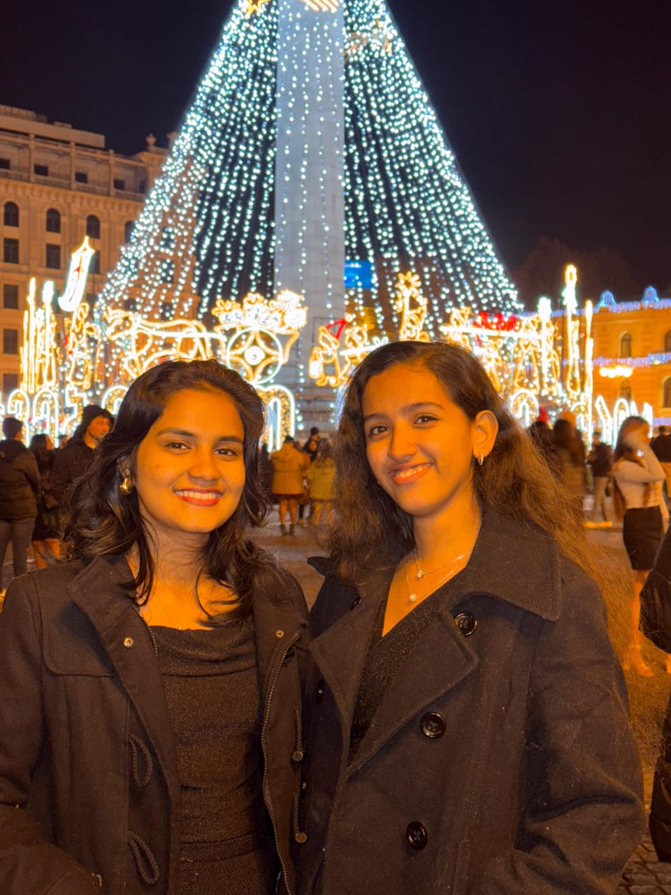
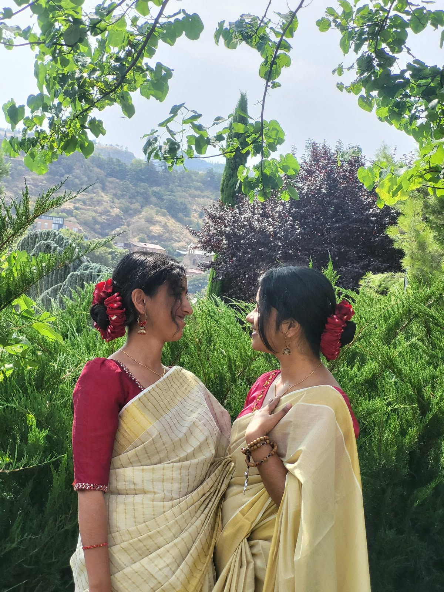

Alku's Birthday Countdown · Day 13
The Space Between Our Classes
if we met in another universe… ♡
Today's question
“if we meet in an alternate universe, ath engane aayirikum in your imagination?”
Today's song
A song for this universe ♡
Today's Bible verse
The angel's delivery ☁️
“Two are better than one: They get a good wage for their toil. If the one falls, the other will help the fallen one. But woe to the solitary person! If that one should fall, there is no other to help. So also, if two sleep together, they keep each other warm. How can one alone keep warm?”
Ecclesiastes 4:9–11
Soo alkuuu sabhaprasngakan prynee kandooo... Nmlekurich alleee ithokleee... Enthokeyo prynm enn ond but type cheyth maduth so... Yk this is
about us!!!
Tap the little scroll to read today's verse ♡
An alternate-universe story
✧ ☾ ✧
The Space Between
Our Classes
a story of university, growing up, and finding your person
Somewhere in another universe, maybe we meet in a different hallway, live a different life, and still somehow find our way to each other.
For the universe where a spilled coffee starts everything…
Keep this little story, Alku. A different beginning, a thousand ordinary moments, and a friendship that becomes part of your life. ♡
Downloads here without leaving this page.
Little pieces of our universe


A tiny surprise
The two-second dance
♡
Dilku forever.
A little wheel of affection
COMPLIMENT
CHOCOLATE
One little note for Dia